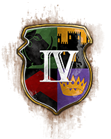

Edad:
Categoría:
Edad:
Categoría:
Edad:
Alta Edad Media
Edad Feudal
Edad Castillos

Edad Imperial⚔️ Arena de Duelo 1 vs 1
Simulador de combate continuo, cálculo impacto a impacto y DPS competitivo
Cargando...
Puntos de Vida:
0 / 0
Ataque
-
Arm. Melee
-
Arm. Pierce
-
Cadencia
-
Rango
-
Velocidad
-
⚙️ Modificadores & Mejoras
0
👑 Tecnologías Únicas (Coronas):
⚡ Duelos Clásicos (Presets Rápidos):
| Métrica de Ataque | Combatiente I | Combatiente II |
|---|---|---|
| Daño 1.ᵉʳ Golpe | - | - |
| Daño Sostenido | - | - |
| Cadencia (Reload) | - | - |
| DPS Efectivo | - | - |
| Golpes para matar (HTK) | - | - |
| Tiempo para matar (TTK) | - | - |
| Golpes Asestados | - | - |
| Vida Restante | - | - |
-
HTK Combatiente I
-
HTK Combatiente II
-
Duración Combate
-
TTK Combatiente I
-
TTK Combatiente II
-
Ratio de Recursos
Cálculo de eficiencia de recursos: pendiente de simulación.
📜 Crónica del Combate (Log Tick a Tick):
Selecciona combatientes y haz clic en "SIMULAR DUELO" para observar el combate.
Cargando...
Puntos de Vida:
0 / 0
Ataque
-
Arm. Melee
-
Arm. Pierce
-
Cadencia
-
Rango
-
Velocidad
-
⚙️ Modificadores & Mejoras
0
👑 Tecnologías Únicas (Coronas):